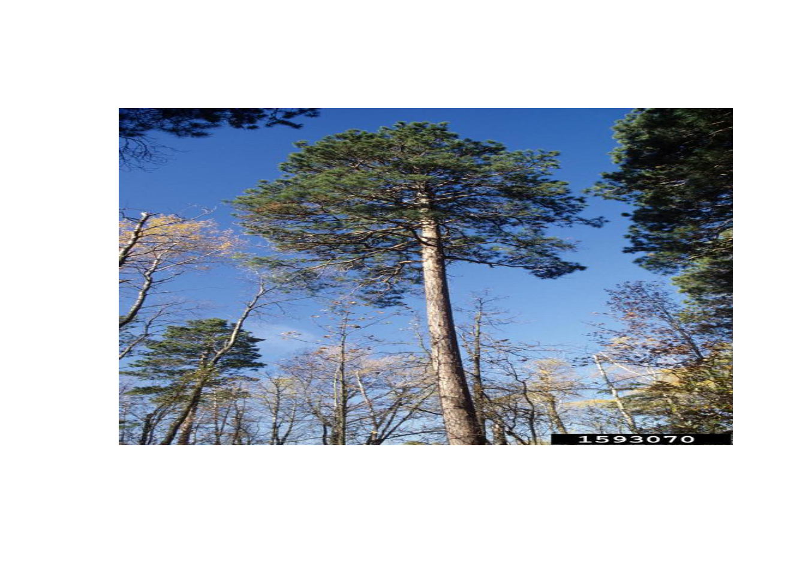

library(jpeg)
library(tidyverse) #call tidyverse package
#> ── Attaching core tidyverse packages ──────────────────────── tidyverse 2.0.0 ──
#> ✔ dplyr 1.1.4 ✔ readr 2.1.5
#> ✔ forcats 1.0.0 ✔ stringr 1.5.1
#> ✔ ggplot2 3.5.1 ✔ tibble 3.2.1
#> ✔ lubridate 1.9.4 ✔ tidyr 1.3.1
#> ✔ purrr 1.0.2
#> ── Conflicts ────────────────────────────────────────── tidyverse_conflicts() ──
#> ✖ dplyr::filter() masks stats::filter()
#> ✖ dplyr::lag() masks stats::lag()
#> ℹ Use the conflicted package (<http://conflicted.r-lib.org/>) to force all conflicts to become errors
tree_data<-read.csv(file.choose()) #read in the tree_dat csv and name
glimpse(tree_data)
#> Rows: 131,386
#> Columns: 8
#> $ treeID <int> 1, 1, 1, 1, 1, 1, 1, 1, 1, 1, 1, 1, 1, 1, 1, 1, 1, 1, 1, 1, 1,…
#> $ standID <int> 1, 1, 1, 1, 1, 1, 1, 1, 1, 1, 1, 1, 1, 1, 1, 1, 1, 1, 1, 1, 1,…
#> $ stand <chr> "A1", "A1", "A1", "A1", "A1", "A1", "A1", "A1", "A1", "A1", "A…
#> $ year <int> 1960, 1961, 1962, 1963, 1964, 1965, 1966, 1967, 1968, 1969, 19…
#> $ species <chr> "ABBA", "ABBA", "ABBA", "ABBA", "ABBA", "ABBA", "ABBA", "ABBA"…
#> $ age <int> 1, 2, 3, 4, 5, 6, 7, 8, 9, 10, 11, 12, 13, 14, 15, 16, 17, 18,…
#> $ inc <dbl> 0.930, 0.950, 0.985, 0.985, 0.715, 0.840, 0.685, 0.940, 1.165,…
#> $ rad_ib <dbl> 10.78145, 11.73145, 12.71645, 13.70145, 14.41645, 15.25645, 15…
str(tree_data)
#> 'data.frame': 131386 obs. of 8 variables:
#> $ treeID : int 1 1 1 1 1 1 1 1 1 1 ...
#> $ standID: int 1 1 1 1 1 1 1 1 1 1 ...
#> $ stand : chr "A1" "A1" "A1" "A1" ...
#> $ year : int 1960 1961 1962 1963 1964 1965 1966 1967 1968 1969 ...
#> $ species: chr "ABBA" "ABBA" "ABBA" "ABBA" ...
#> $ age : int 1 2 3 4 5 6 7 8 9 10 ...
#> $ inc : num 0.93 0.95 0.985 0.985 0.715 ...
#> $ rad_ib : num 10.8 11.7 12.7 13.7 14.4 ...tree-growth-lab2
Question 1: Read in the Minnesota tree growth dataset. Use glimpse to understand the structure and names of the dataset. Decribe the structure and what you see in the dataset?
The dataset is a dataframe structure that has 131,386 rows/observations and 8 columns/ variables. It has integers, characters, and numeric data. This dataset decribes chacrteristics of trees in Minnesota.
Question 2: How many records have been made in stand 1?
filter(tree_data,standID ==1) %>%
nrow()
#> [1] 979979 records have been made in stand 1
#Question 3: How many records of the Abies balsamea and Pinus strobus species have been made?
filter(tree_data,species== "ABBA" | species== "PIST") %>% #ABBA is species code for Abies balsamea.PIST is code for pinus strobus
nrow() #count the number of rows
#> [1] 1722117,221 records have been made for the Abies balsamea and Pinus Strobus species
Question 4: How many trees are older then 200 years old in the last year of the dataset?
filter(tree_data,max(year) & age>200) %>% #using 2 conditions to subset data
nrow() #count the number of rows
#> [1] 181There are 181 trees that are older than 200 years old in the last year of the data set.
Question 5: What is the oldest tree in the dataset found using slice_max?
tree_data %>% #starting off wit the tree data
slice_max(age,n=1) #taking the max age of tree and showing top row
#> treeID standID stand year species age inc rad_ib
#> 1 24 2 A2 2007 PIRE 269 0.37 308.84Pinus resinosa is the oldest tree in the dataset at 269 years old.
Question 6: Find the oldest 5 trees recorded in 2001. Use the help docs to understand optional parameters
tree_data %>% #start with the tree data and pipe it
filter(year==2001) %>%
slice_max(age,n=5) #in addition to the filtered year, taking the max age of the top 5.
#> treeID standID stand year species age inc rad_ib
#> 1 24 2 A2 2001 PIRE 263 0.210 306.880
#> 2 25 2 A2 2001 PIRE 259 0.280 156.210
#> 3 1595 24 F1 2001 FRNI 212 0.579 156.267
#> 4 1598 24 F1 2001 FRNI 206 0.394 130.251
#> 5 1712 26 F3 2001 FRNI 206 0.168 154.354In 2001, the five oldest trees were of the species Pinus resinosa and Fraxinus nigra. They had ages ranging from 206 to 263 years old.
Question 7: Using slice_sample, how many trees are in a 30% sample of those recorded in 2002?
tree_data %>%
filter(year == 2002) %>% # Filter for records from 2002
slice_sample(prop = 0.3) %>% # Take a 30% sample of those records
nrow() #counting rows of the sample
#> [1] 687There are 687 trees in a 30% sample of those recorded in 2002.
Question 8: Filter all trees in stand 5 in 2007. Sort this subset by descending radius at breast height (rad_ib) and use slice_head() to get the top three trees. Report the tree IDs
tree_data %>% #start with the tree data and pipe it
filter(standID==5 & year==2007) %>% #filter by the standid and the year
arrange(desc(rad_ib)) %>% #arrange from llargest to smallest breast height
slice_head(n=3) #get the top 3 trees
#> treeID standID stand year species age inc rad_ib
#> 1 128 5 A6 2007 PIST 82 0.885 238.8850
#> 2 157 5 A6 2007 PIRE 85 0.900 217.8700
#> 3 135 5 A6 2007 PIMA 84 0.110 210.1874The top three tree species in stand 5 in 2007, is Pinus strobus, Pinus resinosa, and followed by Picea mariana. This is based on the descending radius at breast height.
Question 9: Reduce your full data.frame to [treeID, standID, year, and radius at breast height]. Filter to only those in stand 3 with records from 2007, and use slice_min to pull the smallest three trees meaured that year.
#select(data,column name,column name, column name, column name)
#don't want permanent change yet, so no new data frame
tree_data %>%
select(treeID,standID,year,rad_ib) %>% #use standID, there is no stand 3
filter(standID==3 & year==2007) %>%
slice_min(rad_ib,n=3) #Select the smallest three trees based on radius at breast height
#> treeID standID year rad_ib
#> 1 50 3 2007 47.396
#> 2 56 3 2007 48.440
#> 3 36 3 2007 54.925Question 10: Use select to remove the stand column. Use glimspe to show the dataset.
#copy above code with the change of removing standID. - sign means not to include
tree_data %>%
select(treeID,-standID,year,rad_ib) %>% #use -standID, there is no stand 3
filter(year==2007) %>%
glimpse()
#> Rows: 2,291
#> Columns: 3
#> $ treeID <int> 1, 2, 3, 4, 5, 6, 7, 8, 9, 10, 11, 12, 13, 14, 15, 16, 17, 18, …
#> $ year <int> 2007, 2007, 2007, 2007, 2007, 2007, 2007, 2007, 2007, 2007, 200…
#> $ rad_ib <dbl> 54.96645, 57.28625, 45.84400, 65.89600, 110.42600, 55.02200, 55…Question 11: Look at the help document for dplyr::select and examine the “Overview of selection features”. Identify an option (there are multiple) that would help select all columns with the string “ID” in the name. Using glimpse to view the remaining dataset
?dplyr::select # info shows to use contains(): Contains a literal string.
#> starting httpd help server ... done
tree_data %>%
select(contains("ID")) %>% #taking dataframe and selecting the string "ID" the name
glimpse() #This function provides a quick overview of the structure of the resulting dataset, showing the columns that have "ID" in their name.
#> Rows: 131,386
#> Columns: 2
#> $ treeID <int> 1, 1, 1, 1, 1, 1, 1, 1, 1, 1, 1, 1, 1, 1, 1, 1, 1, 1, 1, 1, 1,…
#> $ standID <int> 1, 1, 1, 1, 1, 1, 1, 1, 1, 1, 1, 1, 1, 1, 1, 1, 1, 1, 1, 1, 1,…Question 12: Find a selection pattern that captures all columns with either ‘ID’ or ‘stand’ in the name. Use glimpse to verify the selection.
tree_data %>%
select(matches("ID|stand")) %>% #matches(): Matches a regular expression.
glimpse() # | symbol for "or"
#> Rows: 131,386
#> Columns: 3
#> $ treeID <int> 1, 1, 1, 1, 1, 1, 1, 1, 1, 1, 1, 1, 1, 1, 1, 1, 1, 1, 1, 1, 1,…
#> $ standID <int> 1, 1, 1, 1, 1, 1, 1, 1, 1, 1, 1, 1, 1, 1, 1, 1, 1, 1, 1, 1, 1,…
#> $ stand <chr> "A1", "A1", "A1", "A1", "A1", "A1", "A1", "A1", "A1", "A1", "A…Question 13: Looking back at the data dictionary, rename rad_ib and inc to include _[unit] in the name. Unlike earlier options, be sure that this renaming is permanent, and stays with your data.frame (e.g. <-). Use glimpse to view your new data.frame.
#lab notes show growth is in (mm) for both rad_ib and inc
tree_data2<-tree_data %>%
rename(rad_ib_mm= rad_ib,
inc_mm= inc) %>% #The first argument in rename() is the data.frame containing columns to rename and subsequent arguments takes the form new_name = old_name.
glimpse()
#> Rows: 131,386
#> Columns: 8
#> $ treeID <int> 1, 1, 1, 1, 1, 1, 1, 1, 1, 1, 1, 1, 1, 1, 1, 1, 1, 1, 1, 1, …
#> $ standID <int> 1, 1, 1, 1, 1, 1, 1, 1, 1, 1, 1, 1, 1, 1, 1, 1, 1, 1, 1, 1, …
#> $ stand <chr> "A1", "A1", "A1", "A1", "A1", "A1", "A1", "A1", "A1", "A1", …
#> $ year <int> 1960, 1961, 1962, 1963, 1964, 1965, 1966, 1967, 1968, 1969, …
#> $ species <chr> "ABBA", "ABBA", "ABBA", "ABBA", "ABBA", "ABBA", "ABBA", "ABB…
#> $ age <int> 1, 2, 3, 4, 5, 6, 7, 8, 9, 10, 11, 12, 13, 14, 15, 16, 17, 1…
#> $ inc_mm <dbl> 0.930, 0.950, 0.985, 0.985, 0.715, 0.840, 0.685, 0.940, 1.16…
#> $ rad_ib_mm <dbl> 10.78145, 11.73145, 12.71645, 13.70145, 14.41645, 15.25645, …Question 14: A key measurement in forestry in “basal area column”. The metric is computed with the formula:
BA(m2) = 0.00007854⋅DBH^2 Where DBH is the diameter at breast height (cm). Use mutate to compute DBH in centimeters, and BA in m2 (HINT: Make sure rad_ib is in cm prior to computing the diameter!). What is the mean BA_m2 of the the species POTR in 2007?
#mutate() creates new columns (or modifies existing ones) and adds them to the right side of an existing data.frame
#by using the <- symbol, it permanently adds the info.
tree_data2<- tree_data2 %>% # Convert rad_ib from mm to cm by /10
mutate(DBH_cm = 2 * rad_ib_mm/10, # DBH = 2 * radius (rad_inc)
BA_m2 = 0.00007854 * DBH_cm^2) # BA = 0.00007854 * DBH^2 (in m2)
# Filter for species "POTR" in 2007 and calculate the mean BA_m2
tree_data2 %>%
filter(species == "POTR" & year == 2007) %>%
summarise(mean(BA_m2, na.rm = TRUE))
#> mean(BA_m2, na.rm = TRUE)
#> 1 0.03696619The mean BA_m2 of the the species POTR in 2007 is 0.03696619
Question 15: Lets say for the sake of our study, trees are not established until they are 5 years of age. Use if_else to add a boolean column to our dataset called established that is TRUE if the age is greater then 5 and FALSE if less then or equal to five. Once added, use count (see ?count) to determine how many records are from estabilshed trees?
#if_else(condition, true, false, missing = NULL), where condition is a logical vector created using one or more vectors and logical operators.
# Add the 'established' column based on the age condition
tree_data2 <- tree_data2 %>%
mutate(established = if_else(age > 5, TRUE, FALSE)) #TRUE if age > 5, else FALSE
# Use count() to determine how many records are from established trees
tree_data2 %>%
count(established) #will give 2 counts, one for true and one for false
#> established n
#> 1 FALSE 8883
#> 2 TRUE 122503There are 122,503 trees that are esablished
Question 16: Use mutate and case_when to add a new column to you data.frame that classifies each tree into the proper DBH_class. Once done, limit your dataset to the year 2007 and report the number of each class with count.
In forestry, DBH_cm can be used to classify a tree using the following classification: low high class 0 2.5 “seedling” 2.5 10 “sapling” 10 30 “pole” 30 - “sawlog”
# case_when(column == value/"name" ~ "outcome", TRUE ~ "other outcome if not the 1st")
# if type is blank then the outcome is blank, otherwise outcome is diff.
#The right side is the value to use when the left side is TRUE. If no cases are TRUE (i.e., none of the arguments’ left sides are TRUE) then a NA is returned.
# Add a new column 'DBH_class' using case_when based on DBH_cm
tree_data2 <- tree_data2 %>%
mutate(DBH_class = case_when(
DBH_cm <= 2.5 ~ "seedling", # 0 - 2.5 cm
DBH_cm > 2.5 & DBH_cm <= 10 ~ "sapling", # 2.5 - 10 cm
DBH_cm > 10 & DBH_cm <= 30 ~ "pole", # 10 - 30 cm
DBH_cm > 30 ~ "sawlog", # 30 cm and above
TRUE ~ NA_character_ # Default case (catch-all)
))
# Filter the data for the year 2007 and count the number in each class
class2007 <- tree_data2 %>%
filter(year == 2007) %>%
count(DBH_class) # Use count() to get the number of each DBH_class in 2007
In 2007, there are 1,963 trees in the pole class(10-30cm), 252 in the sapling class (2.5-10cm), 76 in the sawlog class (30+cm), and none in the seedling class (0-2.5cm).
Question 17: Compute the mean DBH (in cm) and standard deviation of DBH (in cm) for all trees in 2007. Explain the values you found and their statistical meaning.
#summarize() collapses a data.frame to a single row. We can use summarize() to compute summary statistics for one or more columns in a data.frame. The first argument in summarize() is the data.frame and subsequent arguments define how rows should be collapsed.
# Calculate mean and standard deviation of DBH for all trees in 2007
tree_data2 %>%
filter(year == 2007) %>%
summarise(
mean(DBH_cm, na.rm = TRUE), # Mean of DBH
sd(DBH_cm, na.rm = TRUE) # Standard deviation of DBH
)
#> mean(DBH_cm, na.rm = TRUE) sd(DBH_cm, na.rm = TRUE)
#> 1 16.09351 6.138643In 2007, the mean DBH(cm) of trees is 16.1cm and the standard deviation is 6.1 This means that the average diameter of breast height in that year was about 16cm. This makes sense considering that in the previous problem, most trees in 2007 were of the pole class, ranging from 10-30cm. The standard deviation shows that there is quite a bit of variability in the measurements of DBH from trees for that year, within 10 to 22cm.
Question 18: Compute the per species mean tree age using only those ages recorded in 2003. Identify the three species with the oldest mean age.
tree_data2 %>%
filter(year == 2003) %>% # Filter to include only data from 2003
group_by(species) %>% # Group by species
summarize(mean_age=mean(age, na.rm = TRUE)) %>% # Compute the mean age for each species
arrange(desc(mean_age)) %>% # Order by mean age in descending order
slice_head(n = 3)
#> # A tibble: 3 × 2
#> species mean_age
#> <chr> <dbl>
#> 1 THOC 127.
#> 2 FRNI 83.1
#> 3 PIST 73.3The three oldest tree species based off of mean age, in 2003, are the Thuja occidentalis (126 years old), Fraxinus nigra (83 years old), and the Pinus strobus(73 years old).
Question 19: In a single summarize call, find the number of unique years with records in the data set along with the first and last year recorded?
tree_data2 %>%
summarize( n_distinct(year), # Count the number of distinct years
min(year, na.rm = TRUE), # Find the first (earliest) year
max(year, na.rm = TRUE)) # Find the last (most recent) year
#> n_distinct(year) min(year, na.rm = TRUE) max(year, na.rm = TRUE)
#> 1 111 1897 2007There are 111 distinctive years in the data, the minumum year is 1897 and the max year is 2007.
Question 20: Determine the stands with the largest number of unique years recorded. Report all stands with largest (or tied with the largest) temporal record.
# first group by the stand column, calculate the number of unique years recorded for each stand using n_distinct(), and then filter to get the stands with the maximum number of unique years.
tree_data2 %>%
group_by(stand) %>%
summarize(num_unique_years = n_distinct(year)) %>% #Count the distinct years for each stand
filter(num_unique_years == max(num_unique_years)) # Get stands with the largest number of unique years)
#> # A tibble: 5 × 2
#> stand num_unique_years
#> <chr> <int>
#> 1 A1 111
#> 2 D1 111
#> 3 D2 111
#> 4 D3 111
#> 5 F1 111The stands with the largest temporal record are stand A1, D1, D2, D3, and F1. They are all tired for anumber of 111 unique years.
Final Question: Use a combination of dplyr verbs to compute these values and report the 3 species with the fastest growth, and the 3 species with the slowest growth. (** You will need to use either lag() or diff() in your compuation. You can learn more about each in the Help pages)
tree_data3<-tree_data2 %>%
arrange(treeID,year) %>%
group_by(treeID, species) %>%
mutate(
dbh_growth = DBH_cm - lag(DBH_cm) # Compute growth as the difference between current and previous year's DBH
) %>%
filter(n() >= 10) %>% # Filter to include only trees with at least 10 years of growth/ 10 rows of data
group_by(species) %>%
summarize(
avg_growth_rate = mean(dbh_growth, na.rm = TRUE), # Compute average growth rate per species
sd_growth_rate = sd(dbh_growth, na.rm = TRUE) # Compute standard deviation of growth rate per species
) %>%
# Sort the species by average growth rate in descending order (fastest growth first)
arrange(desc(avg_growth_rate))
tree_data3 %>% slice_head(n=3)
#> # A tibble: 3 × 3
#> species avg_growth_rate sd_growth_rate
#> <chr> <dbl> <dbl>
#> 1 PIRE 0.358 0.258
#> 2 POTR 0.331 0.218
#> 3 PIBA 0.326 0.247
tree_data3 %>% slice_tail(n=3)
#> # A tibble: 3 × 3
#> species avg_growth_rate sd_growth_rate
#> <chr> <dbl> <dbl>
#> 1 QURU 0.168 0.0869
#> 2 THOC 0.153 0.0909
#> 3 LALA 0.150 0.113The top three species with the highest average growth rate is Pinus resinosa (.36 cm/year), Populus tremuloides (.33 cm/year), and Pinus banksiana (.33 cm/year). The three species with the slowest average growth per year are the Quercus rubra (.17cm/year), Thuja occidentalis (.15cm/ year), and Larix laricina (.15 cm/year).
Here’s an image of the fastest growing species, the Pinus resinosa (red pine)
tree. Picture taken by Steven Katovich, USDA Forest Service
image <-readJPEG("C:/Users/samho/Desktop/ESS330/github/minnesota-tree-growth-lab2/imgs/redpine-Steven_Katovich.jpg")
plot(1:2, type="n", xlab="", ylab="", axes=FALSE)
rasterImage(image, 1, 1, 2, 2)